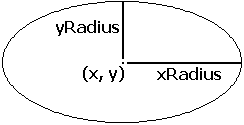

drawfilloval (x, y, xRadius, yRadius, Color : int)
The drawfilloval procedure is used to draw a filled oval whose center is at (x, y). The horizontal and vertical distances from the center to the oval are given by xRadius and yRadius. To get an oval outlined in a different color, use drawfilloval with the Color parameter set to the fill color and then call drawoval with the Color parameter set to the border color.

This program draws a large filled oval that just touches each edge of the screen using color number 1. The maxx and maxy functions are used to determine the maximum x and y values on the screen. The center of the oval is at (midx, midy), which is the middle of the screen.
setscreen ("graphics")
const midx := maxx div 2
const midy := maxy div 2
drawfilloval (midx, midy, midx, midy, 1)
Ideally, a circle is drawn when xRadius = yRadius. In fact, the aspect ratio (the ratio of height to width of pixels displayed on the screen) of the IBM PC compatibles is not 1.0, so this does not draw a true circle. In CGA graphics mode this ratio is 5 to 4. The meaning of the Color number depends on the current palette. See the palette statement. The screen should be in a "graphics" mode. See the setscreen procedure for details. If the screen is not in a "graphics" mode, it will automatically be set to "graphics" mode.
setscreen.html, maxx.html, maxy.html and the various draw… procedures.